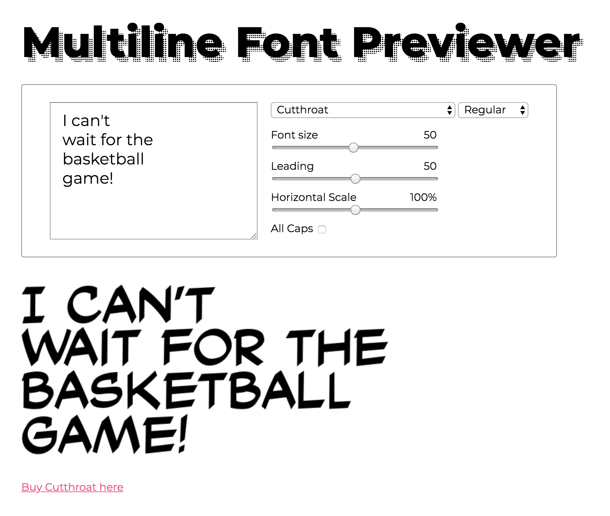

Building a Better Letterer Font Previewer
I built a font previewing app better tailored to letterers' needs, using vanilla JS and the MyFont API.
Fonts are one of a designer's biggest expenses, ranging from a couple dollars to a couple thousand dollars. This is why it's very important for a designer to be able to get a feel for the font before making an investment.
The Problem
The font previewing services currently available only show text on one line, with no way to adjust the leading (space between lines) and horizontal scale.
Fonts that might look good in a long body of copy might not look so great in all-caps stacked in a comic balloon.
Take for example Teko, which has a condensed and blocky look that might be useful in manga lettering.
I can't wait for the basketball game!
When it's presented as a single line, it looks fine. When it's made to be all caps (a standard in comic books) and the words are stacked, you can see it's too dense to be legible at smaller sizes.
I can't wait for the basketball game!
This is the kind of distortion that's useful to letterers, but it's difficult to accomplish with current font previewers.
The Solution
So I made my own font previewer.
Users can toggle between uppercase and mixed case, change the font size and leading, and even adjust the horizontal scale of the characters.
I decided to target Comicraft fonts as a proof of concept, ahead of their annual New Year's Day sale.
Unlike, say, Google Fonts, Comicraft fonts have strict licenses that limit how many people can have access to the font file. This means that the fonts can only be served as a static image, to prevent people from simply saving the font as it's sent as a WOFF. I don't personally have licenses to all these fonts, so I decided to borrow the API from MyFonts.
Let's take the first line of the example above and break it down.
<img src="https://render.myfonts.net/fonts/font_rend.php?id=2aeecfe55776722bfa8ecc237af4c55a&rt=I can't&rs=50&w=1376&sc=1">
The id of the font is 2aeecfe55776722bfa8ecc237af4c55a.
The rt (user-provided text) is I can't.
The rs (font size) is 50.
This API requires an explicit width, so I give it the width of the current container. And that gives us:
I repeat this for each line, et voilà!
To adjust the leading, I change the margin between lines. To adjust the horizontal scale, I adjust the width of all the images. To toggle "All Caps", I have to refresh all of the lines with the text altered accordingly.
Current Issues
Centered Text
Since this API requires an explicit output width, and all of the characters are of variable width, it's not possible to center-align the text.
Ligatures and auto-crossbar
Some fonts have the technology to swap glyphs based on context. For example, the Comicrazy that I have installed on my computer changes all personal-pronoun I's to have crossbars on top and bottom. This API returns literally which glyphs you provide, so you wind up with the normal I glyph.
More weird glyphs
The lowercase i glyph in particular has a lot of trouble. This is especially noticable in Samaritan Tall Lower: